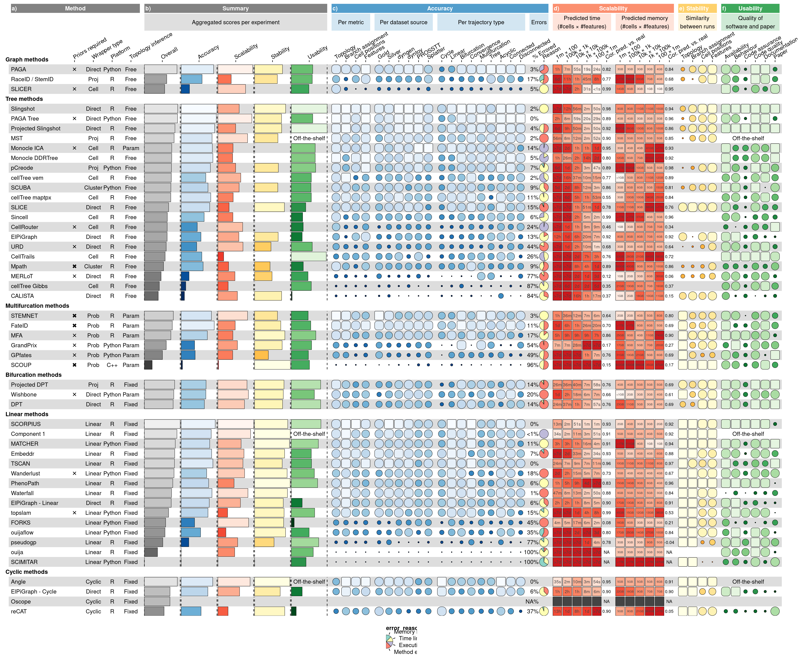

| Data type | Example | Recommended geom |
|---|---|---|
| Numerical data | Scores from 0 to 1 | funkyrect |
| Aggregated data | The mean of scores | bar |
| Measurement data | 3MB or 4h | rect + text overlay |
| Categorical data | R or Python | text or image |
| Proportional data | 80% success, 10% OOM, 10% failed | pie |
funkyheatmap: Visualising data frames with mixed data types
Robrecht Cannoodt* ![]()
Louise Deconinck*
Artuur Couckuyt*
Nikolay S. Markov*
Luke Zappia
Malte D. Luecken
Marta Interlandi
Wouter Saelens†
Yvan Saeys†
*: Shared first authors, †: shared last authors.
Summary
{funkyheatmap} is an innovative package designed to create publication-ready visualisations of data frames containing a mix of numerical and non-numerical data. Its user-friendly interface makes it easy to generate a visualisation simply by providing the data frame. At the same time, {funkyheatmap} also offers flexibility for advanced users to refine their visualisations through row- and column-specific parameters.
The package’s simplicity and customizability make it an ideal tool for exploring summarised results in a research setting. While it has been used extensively to visualise benchmarking results in single-cell omics (Saelens et al. 2019; Luecken et al. 2021, 2023; Yan and Sun 2022; Sang-aram et al. 2023), it’s designed to be versatile and applicable to a wide range of other domains.
{funkyheatmap} has been released on CRAN and PyPi, and is in the process of being ported to JavaScript (Preview available on npm).
Statement of need
Data visualisation is an essential part of data analysis by revealing patterns, trends, and relationships between variables. Packages like ggplot2 (Wickham 2009), Matplotlib (Hunter 2007) and D3.js (Bostock, Ogievetsky, and Heer 2011) offer an intuitive and flexible interface to generate tailor-made visualisations for many types of use cases, such as dot plots, bar charts, and heatmaps.
However, these visualisation tools require intricate scripts when visualising data frames with semantically mixed data types, such as textual, categorical, numerical and ratio data. Such data frames, as typically produced by benchmarking studies, require a combination of these heatmaps, dot plots, bar charts, pie charts and images to visualise results comprehensively and correctly. {funkyheatmap} addresses this limitation by offering a comprehensive and user-friendly solution for visualising mixed data types in data frames.
The utility of {funkyheatmap} was first demonstrated in Saelens et al. (2019) and Luecken et al. (2021), where the unique design concept of funky heatmaps was employed. Since the source code was not available as a standalone R package at that time, several publications adapted the {funkyheatmap} design concepts for their visualisations (Mereu et al. 2020; Pratapa et al. 2019), thus underlining the need for a reusable package for generating funky heatmaps. Since publishing {funkyheatmap} on CRAN, {funkyheatmap} has been used in several other benchmarking studies to visualise the end-results (Yan and Sun 2022; Sang-aram et al. 2023; Luecken et al. 2023), demonstrating its effectiveness and utility in the research community.
Results
The {funkyheatmap} package offers many features designed to customise and enhance the data visualisation process at multiple levels.
The package supports various geometries (geom) to represent different data types per column (Table 1). For instance, numerical data can be represented effectively using a funkyrect (a rounded rectangle where both size and roundness are scaled based on the data) or bar geom, while measurement data can be displayed using a labelled rectangle geom. Categorical data can be visualised using a text or image geom, and proportional data can be represented using a pie-chart geom.
Categorical grouping of rows and columns is supported to separate semantically related rows (e.g. methods) and columns (e.g. metrics and features). It is possible to assign a hierarchical index and different colour palettes to the columns, making these semantic groups more explicit.
Example
The following figure (Figure 1) illustrates the rich and comprehensive visualisations possible with {funkyheatmap}, showcasing its capacity to intuitively represent mixed data types in a single heatmap. The heatmap incorporates different geometries, categorical groupings, and colour palettes, providing a clear, informative, and aesthetically pleasing representation of the data.
library(funkyheatmap)
funky_heatmap(
data = dynbenchmark_data$data,
column_info = dynbenchmark_data$column_info,
column_groups = dynbenchmark_data$column_groups,
row_info = dynbenchmark_data$row_info,
row_groups = dynbenchmark_data$row_groups,
palettes = dynbenchmark_data$palettes,
col_annot_offset = 3.2
)
{funkyheatmap} visualisation using data from a benchmarking study of trajectory inference methods (Saelens et al. 2019).Implementation
The {funkyheatmap} visualisation tool is developed in the R programming language, leveraging the robust and flexible capabilities of the ggplot2 library (Wickham 2009). The package’s design benefits from ggplot2’s declarative nature, which simplifies the addition of new geometries to {funkyheatmap}.
For user convenience and understanding, we have put together comprehensive documentation resources. These include function-level documentations, which explain how to use public functions, the meaning of function arguments, and their possible values. We also offer detailed, step-by-step vignettes to demonstrate the range of customizations that {funkyheatmap} offers.
To ensure the continued quality and reliability of the package, we use the testthat framework for software testing, coupled with continuous integration practices. This combination provides us with a reliable system to catch any potential issues early and maintain the high quality of the software.
We used Viash (Cannoodt et al. 2021) to generate a CLI tool and Nextflow module to allow rendering funky heatmaps from CSV files (See the documentation site for more information).
Recognizing the wide usage of Python in data analysis, we have also developed a Python version of the package, funkyheatmappy. This package utilises the widely used matplotlib library (Hunter 2007) for its operations. To maintain consistency between the R and Python versions, we use shared test data across the implementations. This practice ensures that the visualisations produced by both versions are identical.
Lastly, to cater to the increasing demand for interactive data exploration, we are developing funkyheatmapjs, a JavaScript version of the tool. This interactive version will provide additional features such as sorting rows by clicking on a column and displaying labels on hover. These developments reinforce our commitment to continuous improvement and meeting the diverse needs of our user base.
Conclusion
The {funkyheatmap} package fills an important gap in the data visualisation landscape, addressing the need for visualising semantically mixed data types in an intuitive and comprehensive manner. With its user-friendly interface and extensive customization options, it provides a solution that is as accessible to novices as it is to experienced data scientists. It has already demonstrated its value across numerous benchmarking studies in the single-cell omics field, yet its potential applications extend to any field where these mixed data types need to be visualised.
The future is promising for {funkyheatmap}, with plans for continued enhancements and expansion of its capabilities. The Python package funkyheatmappy offers accessibility to Python-based workflows, while the ongoing development of the JavaScript port funkyheatmapjs, promises interactive exploration capabilities.
Acknowledgements
L.Z. acknowledges support from the Bavarian Ministry of Science and the Arts in the framework of the Bavarian Research Association “ForInter” (Interaction of human brain cells). L.D. acknowledges support from the Research Foundation - Flanders (FWO) [1SF3822N].
References
Bostock, M., V. Ogievetsky, and J. Heer. 2011. “D^3 Data-Driven Documents.” IEEE Transactions on Visualization and Computer Graphics 17 (12): 2301–9. https://doi.org/10.1109/tvcg.2011.185.
Cannoodt, Robrecht, Hendrik Cannoodt, Eric Van de Kerckhove, Andy Boschmans, Dries De Maeyer, and Toni Verbeiren. 2021. “Viash: From Scripts to Pipelines.” arXiv. https://doi.org/10.48550/ARXIV.2110.11494.
Hunter, John D. 2007. “Matplotlib: A 2D Graphics Environment.” Computing in Science & Engineering 9 (3): 90–95. https://doi.org/10.1109/mcse.2007.55.
Luecken, Malte D., M. Büttner, K. Chaichoompu, A. Danese, M. Interlandi, M. F. Mueller, D. C. Strobl, et al. 2021. “Benchmarking Atlas-Level Data Integration in Single-Cell Genomics.” Nature Methods 19 (1): 41–50. https://doi.org/10.1038/s41592-021-01336-8.
Luecken, Malte D., Scott Gigante, Daniel Burkhardt, Robrecht Cannoodt, Daniel Strobl, Nick Markov, Luke Zappia, and …. 2023. “Defining and Benchmarking Open Problems in Single-Cell Data Science.”
Mereu, Elisabetta, Atefeh Lafzi, Catia Moutinho, Christoph Ziegenhain, Davis J. McCarthy, Adrián Álvarez-Varela, Eduard Batlle, et al. 2020. “Benchmarking Single-Cell RNA-Sequencing Protocols for Cell Atlas Projects.” Nature Biotechnology 38 (6): 747–55. https://doi.org/10.1038/s41587-020-0469-4.
Pratapa, Aditya, Amogh P. Jalihal, Jeffrey N. Law, Aditya Bharadwaj, and T. M. Murali. 2019. “Benchmarking Algorithms for Gene Regulatory Network Inference from Single-Cell Transcriptomic Data,” May. https://doi.org/10.1101/642926.
Saelens, Wouter, Robrecht Cannoodt, Helena Todorov, and Yvan Saeys. 2019. “A Comparison of Single-Cell Trajectory Inference Methods.” Nature Biotechnology 37 (5): 547–54. https://doi.org/10.1038/s41587-019-0071-9.
Sang-aram, Chananchida, Robin Browaeys, Ruth Seurinck, and Yvan Saeys. 2023. “Spotless: A Reproducible Pipeline for Benchmarking Cell Type Deconvolution in Spatial Transcriptomics,” March. https://doi.org/10.1101/2023.03.22.533802.
Wickham, Hadley. 2009. Ggplot2. Springer New York. https://doi.org/10.1007/978-0-387-98141-3.
Yan, Lulu, and Xiaoqiang Sun. 2022. “Benchmarking and Integration of Methods for Deconvoluting Spatial Transcriptomic Data.” Edited by Janet Kelso. Bioinformatics 39 (1). https://doi.org/10.1093/bioinformatics/btac805.